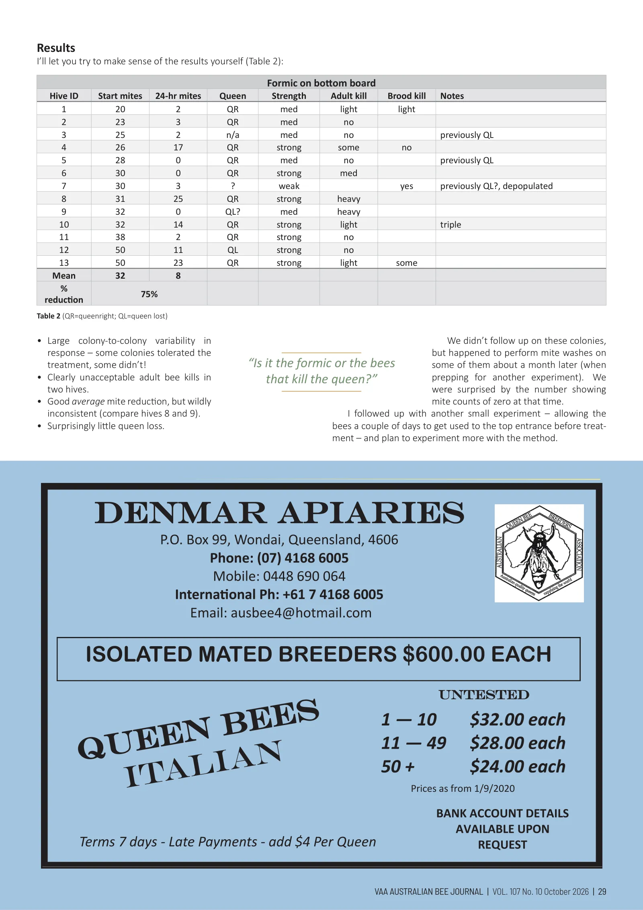

VAA AUSTRALIAN BEE JOURNAL | VOL. 107 No. 10 October 2026 | 29
Results
I’ll let you try to make sense of the results yourself (Table 2):
Formic on bottom board
Hive ID
Start mites
24-hr mites
Queen
Strength
Adult kill
Brood kill
Notes
1
20
2
QR
med
light
light
2
23
3
QR
med
no
3
25
2
n/a
med
no
previously QL
4
26
17
QR
strong
some
no
5
28
0
QR
med
no
previously QL
6
30
0
QR
strong
med
7
30
3
?
weak
yes
previously QL?, depopulated
8
31
25
QR
strong
heavy
9
32
0
QL?
med
heavy
10
32
14
QR
strong
light
triple
11
38
2
QR
strong
no
12
50
11
QL
strong
no
13
50
23
QR
strong
light
some
Mean
32
8
%
reduction
75%
Table 2 (QR=queenright; QL=queen lost)
• Large colony-to-colony variability in
response – some colonies tolerated the
treatment, some didn’t!
• Clearly unacceptable adult bee kills in
two hives.
• Good average mite reduction, but wildly
inconsistent (compare hives 8 and 9).
• Surprisingly little queen loss.
We didn’t follow up on these colonies,
but happened to perform mite washes on
some of them about a month later (when
prepping for another experiment). We
were surprised by the number showing
mite counts of zero at that time.
I followed up with another small experiment – allowing the
bees a couple of days to get used to the top entrance before treat-
ment – and plan to experiment more with the method.
“Is it the formic or the bees
that kill the queen?”